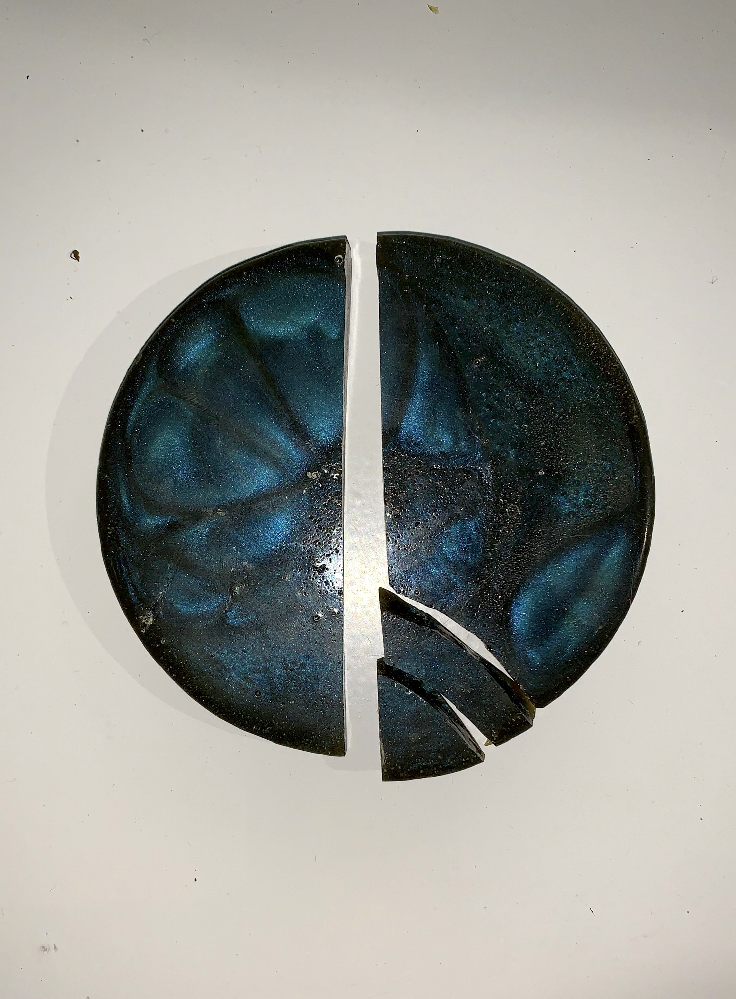
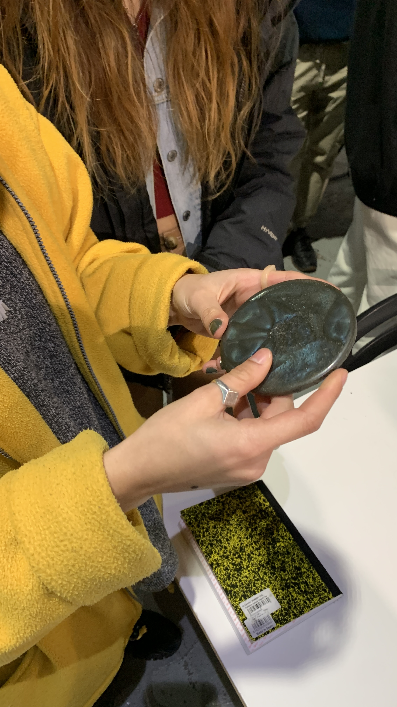

This week was not super eventful in terms of academic events, given that we only had two classes. Personally, I had a few struggles this week because I had received some bad family news, bad covid news, I spilled water over my computer, and overall was struggling to see the bright side of things for a few days. I find that I always prioritize being productive because it gives me a sense of purpose, but I know some times can demand other types of needs. I can’t expect to always be the epitome of getting shit together, and I don’t need to feel the pressure of that either.
Anyways, now that that’s off my chest I wanted to recall some moments from the class on Thursday: Remixing Materials, held by Laura Campos. Other than me breaking one of the prof’s samples, feeling really sad about it and like a total klutz, it was a good day. If you're reading this Laura, I am sorry again and I will make you an even shinier, even brighter biomaterial once I get the chance.


I was surprised that our first “Emergent Technology” we were exploring was biomaterials, because I hadn’t ever thought about them as a technology.
Laura gave an introduction to biomaterials, their functionality, composition, uses and the frameworks surrounding the movement in general. She also shared an interesting diagram distinguishing bio-based materials versus biodegradable ones. A lot of the things she talked about I was already familiar with thanks to the research I did with my group for our Design Intervention, but I was happy that my information was being confirmed by a person working in the field.
The day before Thursday, we had our first class with Tomas, “Making Sense and Meaning”. I didn’t take away much from that class other than the different perspectives of design, whether it be Balinesian, German or Feng Shui. I believe that the reason for this was because it was very introductory, and the upcoming lessons will discuss specific topics and concepts more, when the guests will be invited.
After that class, we met up on the beach in Barcelona for a picnic. It was our first MDEF gathering this year, and it was fun to see friendly faces I hadn’t seen in a while. We ate sandwiches in the sun until the wind got too cold and it was time to go home.
To conclude this weekly reflection, I am wishing for better times ahead and the possibility of having in-person lessons, because they truly make a difference in our engagement and overall happiness levels.